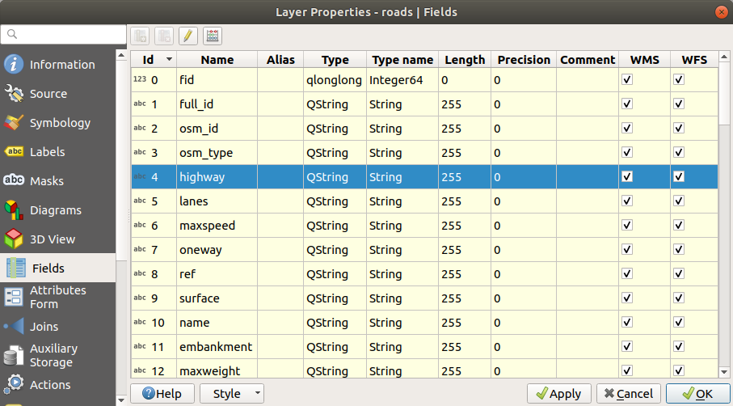
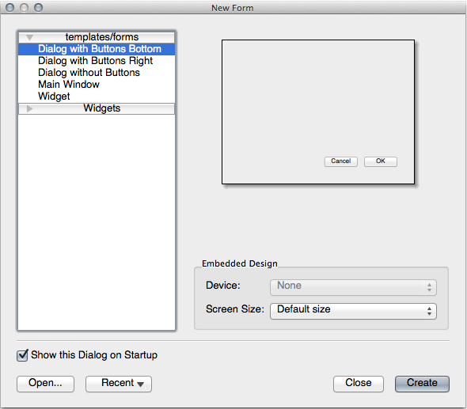

When you add new data via digitizing, you’re presented with a dialog
that lets you fill in the attributes for that feature.
However, this dialog is not, by default, very nice to look at.
This can cause a usability problem, especially if you have large
datasets to create, or if you want other people to help you digitize
and they find the default forms to be confusing.
Fortunately, QGIS lets you create your own custom dialogs for a
layer.
This lesson shows you how.
The goal for this lesson: To create a form for a layer.
5.3.1. ★☆☆ Follow Along: Using QGIS’ Form Design Functionality
Select the roads layer in the Layers panel
Enter Edit Mode as before
Open the roads layer’s attribute table
Right-click on any cell in the table. A short menu will appear,
that includes the Open form entry.
Click on it to see the form that QGIS generates for this layer
Obviously it would be nice to be able to do this while looking at the
map, rather than needing to search for a specific street in the
Attribute Table all the time.
Select the roads layer in the Layers panel
Using the Identify Features tool, click on any
street in the map.
The Identify Results panel opens and shows a tree view
of the fields values and other general information about the
clicked feature.
At the top of the panel, check the Auto open form for single feature results
checkbox in the Identify Settings menu.
Now, click again on any street in the map. Along the previous
Identify Results dialog, you’ll see the now-familiar
form:
Each time you click on a single feature with the Identify tool,
its form pops up as long as the Auto open form is
checked.
5.3.2. ★☆☆ Try Yourself: Using the Form to Edit Values
If you are in edit mode, you can use this form to edit a feature’s
attributes.
Activate edit mode (if it isn’t already activated).
Using the Identify Features tool, click on the
main street running through Swellendam:
Edit its highway value to be secondary
Exit edit mode and save your edits
Open the Attribute Table and note that the value has
been updated in the attributes table and therefore in the source
data
5.3.3. ★★☆ Follow Along: Setting Form Field Types
It’s nice to edit things using a form, but you still have to enter
everything by hand.
Fortunately, forms have different kinds of so-called widgets that
allow you to edit data in various different ways.
Open the roads layer’s Properties…
Switch to the Fields tab. You’ll see this:

Switch to the Attributes Form tab. You’ll see this:
Click on the oneway row and choose Checkbox as
Widget Type in the list of options:
Click OK
Enter edit mode (if the roads layer is not already in edit mode)
Click on the Identify Features tool
Click on the same main road you chose earlier
You will now see that the oneway attribute has a
checkbox next to it denoting True (checked) or False
(unchecked).
Set a more appropriate form widget for the highway field.
Answer
For the TYPE, there is obviously a limited amount of types that a
road can be, and if you check the attribute table for this layer, you’ll see
that they are predefined.
Set the widget to Value Map and click
Load Data from Layer.
Select roads in the Label dropdown and
highway for both the Value and Description
options:
Click OK three times.
If you use the Identify tool on a street now while edit mode is
active, the dialog you get should look like this:
You can also design your own custom form completely from scratch.
Create a simple point layer named test-data with two
attributes:
name (text)
age (integer)
Capture a few points on your new layer using the digitizing tools
so that you have a little data to play with.
You should be presented with the default QGIS generated attribute
capture form each time you capture a new point.
Note
You may need to disable Snapping if still enabled from
earlier tasks.
Now we want to create our own custom form for the attribute data
capture phase.
To do this, you need to have QT Designer installed (only needed for
the person who creates the forms).
Start QT Designer.
In the dialog that appears, create a new dialog:

Look for the Widget Box along the left of your screen
(default).
It contains an item called Line Edit.
Click and drag this item into your form. This creates a new
Line Edit in the form.
With the new line edit element selected, you’ll see its
properties along the side of your screen (on the right by
default):
Set its name to name.
Using the same approach, create a new Spin Box and set its name to
age.
Add a Label with the text AddaNewPerson in a
bold font (look in the object properties to find out how to set
this).
Alternatively, you may want to set the title of the dialog itself
(rather than adding a label).
Add a Label for your Line Edit and your Spin Box.
Arrange the elements to your own desire.
Click anywhere in your dialog.
Find the Lay Out in a Form Layout button (in a toolbar along the top
edge of the screen, by default). This lays out your dialog
automatically.
Set the dialog’s maximum size (in its properties) to 200
(width) by 150 (height).
Your form should now look similar to this:
Save your new form as exercise_data/forms/add_people.ui
When it’s done saving, you can close Qt Designer
5.3.7. ★★★ Follow Along: Associating the Form with Your Layer
Go back to QGIS
Double click the test-data layer in the legend to
access its properties.
Click on the Attributes Form tab in the
Layer Properties dialog
In the Attribute editor layout dropdown, select
Provide ui-file.
Click the ellipsis button and choose the add_people.ui file
you just created:
Click OK on the Layer Properties dialog
Enter edit mode and capture a new point
When you do so, you will be presented with your custom dialog
(instead of the generic one that QGIS usually creates).
If you click on one of your points using the
Identify Features tool, you can now bring up the
form by right clicking in the identify results window and choosing
View Feature Form from the context menu.
If you are in edit mode for this layer, that context menu will show
Edit Feature Form instead, and you can then adjust
the attributes in the new form even after initial capture.
Using forms, you can make life easier for yourself when editing or
creating data.
By editing widget types or creating an entirely new form from scratch,
you can control the experience of someone who digitizes new data for
that layer, thereby minimizing misunderstandings and unnecessary
errors.
If you completed the advanced section above and have knowledge of
Python, you may want to check out
this blog entry
about creating custom feature forms with Python logic, which allows
advanced functions including data validation, autocompletion, etc.
Opening a form on identifying a feature is one of the standard actions
that QGIS can perform.
However, you can also direct it to perform custom actions that you
define.
This is the subject of the next lesson.
 Identify Features tool, click on any
street in the map.
Identify Features tool, click on any
street in the map. Identify Settings menu.
Identify Settings menu.